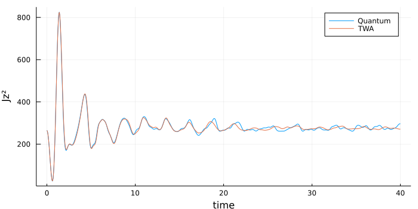
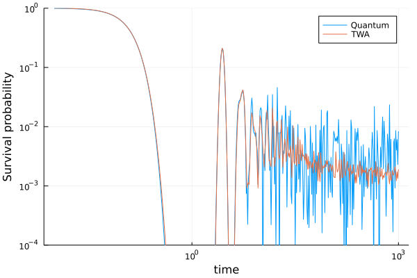

Examples for DickeBCE
The module Dicke.DickeBCE works with the quantum Dicke model using a very efficient basis known as the coherent efficient basis (BCE for its acronym in Spanish). See Refs. [4] and [5] for a detailed explanation on how and why it works. Throughout this examples, we will work with a system size of j = 30, but using this module you can easily go up to j = 100, as done in Refs. [12], [13], [18].
Diagonalizing the Dicke Hamiltonian
Let us start by defining our parameters:
using Dicke.DickeBCE, Dicke.ClassicalDicke
systemQ = QuantumDickeSystem(ω=1.0, γ=1.0, ω₀=1.0, j=30, Nmax=120)To load the eigenbasis, simply use diagonalization:
@time eigenenergies,eigenstates = diagonalization(systemQ)[ Info: Diagonalizing... [ Info: 3454 converged states were obtained up to ϵ=1.1807678467701475. [ Info: Fixing numerical degeneracies (correcting parity). 600.878784 seconds (234.05 M allocations: 7.608 GiB, 0.39% gc time, 0.61% compilation time)
This saves the diagonalization to disk, so next time you can do:
systemQ = QuantumDickeSystem(ω=1.0, γ=1.0, ω₀=1.0, j = 30)
@time eigenenergies,eigenstates = diagonalization(systemQ)[ Info: Loading diagonalization: Nmax=120 21.121601 seconds (29.46 M allocations: 2.180 GiB, 1.91% gc time, 2.04% compilation time)
(Note that we did not have to pass Nmax this time, it loaded it from disk.)
The resulting eigenstates form a matrix. To get the $k$th eigenstate, simply do state_k = eigenstates[:,k].
Local density of states of a coherent state
In this example, we obtain the eigenenergy components of a coherent state.
using Plots
using Dicke.DickeBCE, Dicke.ClassicalDicke
j = 30
systemC = ClassicalDickeSystem(ω=1.0, γ=1.0, ω₀=1.0)
systemQ = QuantumDickeSystem(systemC, j = j, Nmax=120)
eigenenergies,eigenstates = diagonalization(systemQ)
ϵₓ = -0.5
x = Point(systemC, Q=-1, P=0, p=0, ϵ=ϵₓ)
coh_state = coherent_state(systemQ, x)
coherent_state_eigenbasis = transpose(eigenstates)*coh_state
abscₖ²=abs2.(coherent_state_eigenbasis)
ϵₖs = eigenenergies/j
plot(histogram(ϵₖs, weights=abscₖ²,
ylabel="Probability density", xticks=:none,normed=true,nbins=50),
scatter(ϵₖs, abscₖ², ylabel="|cₖ|²", xlabel="ϵ"),
size=(700,500), key=false, layout=(@layout [°;°]),
xlim=(ϵₖs[1],ϵₖs[end]))
See this example for a semiclassical computation of the envelope of this function.
Evolution of coherent state vs TWA
Let us compare the evolution of a quantum state with that given by truncated Wigner approximation (see Refs. [17], [11]).
using Plots
using Dicke.TruncatedWignerApproximation
using Dicke.DickeBCE, Dicke.ClassicalDicke
using LinearAlgebra
j = 30
systemC = ClassicalDickeSystem(ω=1.0, γ=1.0, ω₀=1.0)
systemQ = QuantumDickeSystem(systemC, j = j, Nmax=120)
eigenenergies,eigenstates = diagonalization(systemQ)
x = Point(systemC, Q=1.75, P=0, p=0, ϵ=-0.5)
coh_state=coherent_state(systemQ, x)
W = coherent_Wigner_HWxSU2(x,j=j)
nothing #hideFirst, we compare the expectation value of the observable $\hat{J}_z^2$. Note that we use Weyl.Jz²(j), which is not the same as Weyl.Jz(j)^2.
ts= 0:0.05:40
evolution = evolve(ts, coh_state,
eigenstates=eigenstates,
eigenenergies=eigenenergies);
Jz²=DickeBCE.Jz(systemQ)^2
exvals = [real(dot(v,Jz²,v)) for v in eachcol(evolution)]
N=20000
if !on_github N=1000 end
TWA = average(systemC,
distribution = W,
observable = Weyl.Jz²(j),
ts = ts,
N = N)
plot(ts, [exvals TWA],
size=(700,350), label=["Quantum" "TWA"],
xlabel = "time", ylabel="Jz²")
Now let us take a look at the survival probability (see Ref. [17]).
ts=exp10.(-2:0.01:3)
N=20000
if !on_github N=1000 end
classical_SP = TruncatedWignerApproximation.survival_probability(
systemC;
distribution = W,
N=N, ts=ts
)
quantum_SP = DickeBCE.survival_probability(
ts,
state=coh_state,
eigenstates=eigenstates,
eigenenergies=eigenenergies
)
plot(ts, [quantum_SP classical_SP],
yscale=:log10, xscale=:log10,
ylim=(1e-4,1), label=["Quantum" "TWA"],
xlabel="time", ylabel="Survival probability")
Efficient Husimi functions
The functions DickeBCE.husimi, DickeBCE.coherent_overlap, and DickeBCE.coherent_state all accept a tol argument, which allows to significally speed up computation time at the cost of slight numerical precision [10]. In this example we show how significant this speedup can be. Let us construct a big system:
using Dicke
using Dicke.DickeBCE
using Dicke.ClassicalDicke
using LinearAlgebra
j = 600
Nmax = 1200
system = QuantumDickeSystem(ω₀=1, ω=1, γ=1, j=j, Nmax=Nmax);Do not try to diagonalize such a big system! Your computer might explode!
For the sake of example, let us construct some random states in a simple manner (although if you are interested in building random states in the eigenbasis, check the function DickeBCE.random_state).
n = 3 #how many random vectors
D = dimension(system)
random_vectors = rand(ComplexF64,(D,n))
for i in 1:n
random_vectors[:,i] /= norm(@view random_vectors[:,i]) #normalize each one
endrandom_vectors is a matrix with n columns (states). Let us fix a point in the phase space:
x = Point(Q=0.6, P=-0.1, p=-0.2, q=-0.8)We may call husimi(system, x, random_vectors), which will return an array with n elements. The ith element is the result of evaluating the Husimi function of the ith state (column) at the point x.
julia> @time husimi(system, x, random_vectors, tol=0)
14.243865 seconds (34.10 M allocations: 927.095 MiB, 5.10% gc time, 2.55% compilation time)
3-element Vector{Float64}:
1.2746734986914377e-7
6.20535210800852e-8
2.7064608829056714e-7By passing tol=0 we are allowing for no optimization. The code has to build all the coefficients of the coherent state and then multiply them by each coefficient in random_vectors. However, if we allow tol to be slightly bigger, things will speed up significantly:
julia> @time husimi(system, x, random_vectors, tol=1e-14)
0.079492 seconds (456.54 k allocations: 13.270 MiB, 27.99% compilation time)
3-element Vector{Float64}:
1.274678835723417e-7
6.205397710320293e-8
2.70646320639564e-7Note that the results barely changed, but this time it used a lot less memory and time. The tol argument tells the code it can chop a portion of size tol off the tails of the distribution of the coherent state (see Ref. [10] for details). You loose almost no information, and you gain a lot of time. The default is tol = 1e-6, which gives enough precision for most purposes (although you may increase it if you need more precision):
julia> @time husimi(system, x, random_vectors) #default tol = 1e-6
0.028671 seconds (194.72 k allocations: 5.249 MiB)
3-element Vector{Float64}:
1.285460060073177e-7
6.239461243180415e-8
2.7032019935286814e-7That's fast!
Projected Wigner function of a cat state
Using DickeBCE.WignerProjqp, we may compute the Wigner function of a state, projected onto the atomic plane. Note: the functions for computing Wigner functions are not thoroughly tested. They are based on these notes [9]
using Dicke.ClassicalDicke, Dicke.DickeBCE
systemC = ClassicalDickeSystem(ω=1.0, γ=1.0, ω₀=1.0)
systemQ = QuantumDickeSystem(systemC, j=10, Nmax=50)
res=0.05
if !on_github res=0.2 end #end
Qs=Ps=-2:res:2
pts=[[Q,P] for Q in Qs, P in Ps if Q^2+P^2 <= 4]
x = Point(Q=-1.0, P=0, p=0, q=0)
y = Point(Q= 1.0, P=0, p=0, q=0)
🐱 = 1/sqrt(2) * (coherent_state(systemQ, x) + coherent_state(systemQ, y))
W=DickeBCE.WignerProjqp(systemQ,
[🐱],
pts
)[1]
d=Dict(zip(pts,W))
function mW(Q,P)
if [Q,P] in pts
return d[[Q,P]]
else
return NaN
end
end
heatmap(Qs, Ps, mW, size=(600,600),
xlabel = "Q", ylabel = "P",
c=cgrad(:bwr, rev = true), clim=(-2.5,2.5))